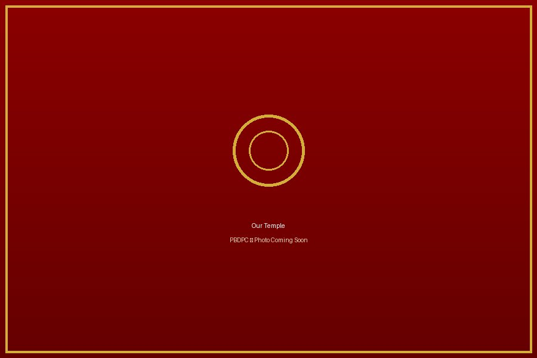

Sacred Temple
Our temple is regarded by devotees as a spiritually awakened place of worship where thousands seek blessings throughout the year.
Nearly eight decades of devotion, tradition, culture, and community service. Experience the divine blessings of Maa Durga at one of Murshidabad's oldest community temples.
Protappur Baroari Durga Puja Committee (PBDPC) is one of the oldest community Durga Puja committees in Murshidabad, West Bengal. For more than seven decades, we have been preserving our spiritual heritage, celebrating our traditions and serving society with devotion.

Established in 1948, our journey began with a temporary bamboo structure built by a group of devoted villagers. Through faith, dedication and community support, that humble beginning has transformed into the magnificent temple that stands today.
In 2021, the newly constructed temple was inaugurated by Padma Shri Swami Pradiptananda Ji Maharaj (Kartik Maharaj) , marking a historic milestone in our committee's journey.
Our temple is regarded by devotees as a spiritually awakened place of worship where thousands seek blessings throughout the year.
More than 75 years of uninterrupted worship, community participation and preservation of Bengal's cultural traditions.
Religious rituals, traditional offerings, Kumro Bali and sacred Annabhog continue to preserve our unique customs.
Every Mahashtami, volunteers personally deliver prasad to households across the village with devotion and care.
Established
Years of Heritage
Annual Visitors
Major Festivals
The present temple stands as a symbol of unity, devotion and community participation. Constructed with the blessings of devotees and inaugurated in 2021, it continues the legacy that began in 1948.

Throughout the year, PBDPC organizes several religious and cultural events that bring devotees together in celebration and service.

Our flagship festival celebrated with devotion, cultural programs, bhog distribution and community participation.
Read More
Celebrating Maa Lakshmi with traditional rituals, prayers and offerings for prosperity.
Read More
A sacred celebration dedicated to Lord Rama with devotional songs, prayers and community events.
Read MoreOctober 2026
After Durga Puja
April 2027
Your generous contribution helps us preserve our traditions, organize festivals and continue community service.
Donate Now